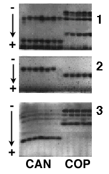

PROTEIN ELECTROPHORESIS
|
To compare proteins from two different types of plants, scientists sometimes carry out an experiment to separate the proteins from each other, so they can be examined separately (a protein electrophoresis experiment). A mixture of protein molecules is extracted from plant tissue and placed at one end of a slab of gelatin-like material. The gel slab is then placed in a strong electrical field.  All of the proteins are pulled toward the positive pole of the electric field (+ in each of the three gel pictures), but because big molecules travel slowly through the gel matrix and small molecules travel more quickly, the proteins become separated according to their size. Molecules can also be separated on the basis of charge or pH. The banding pattern that forms in an experiment like this is distinctive for each set of proteins studied. In fact, comparison of the same protein in different species can show different banding patterns in the different species. Using this sort of distinguishing information, scientists can help identify to what plant species an individual plant belongs. An electrophoretic study of two "forms" of a fern, Notholaena candida is shown in the picture. The dark spots in the picture are proteins extracted from the two types of ferns (labeled CAN and COP) and separated by protein electrophoresis (different proteins are identified in 1,2,3). This gel shows that the protein banding patterns of the two types of ferns are different from each other. Along with other sorts of evidence, this experiment suggests that the two ferns are different enough from each other that perhaps they should be recognized as different species of fern. Why would the banding patterns of the same protein (a protein with the same function) be different in different species? Over evolutionary time, the DNA of the two species accumulates differences due to mutation. The proteins in the two types of organisms (which are encoded by the DNA) may have slightly different sequences, which accounts for different banding patterns on the gels, but still retain the same or similar functions. |